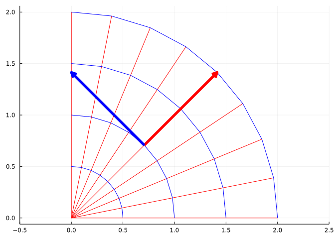
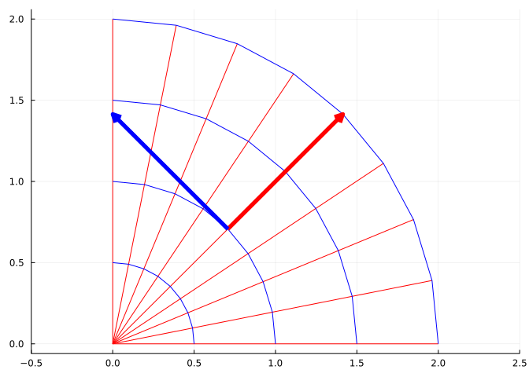
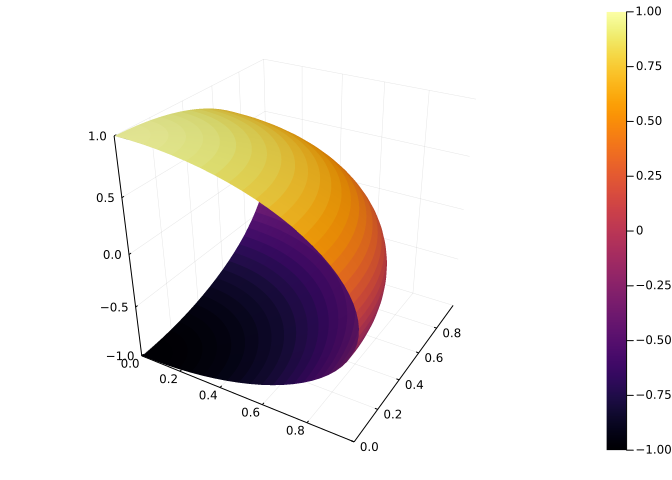
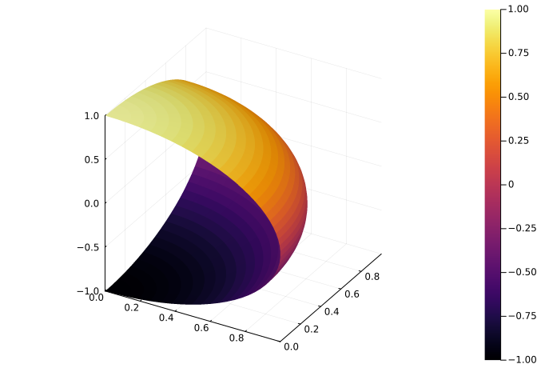
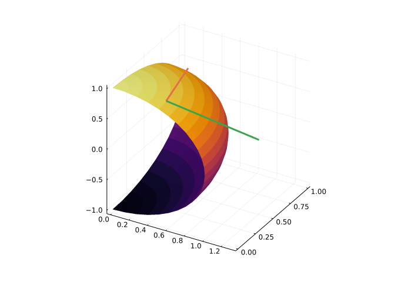
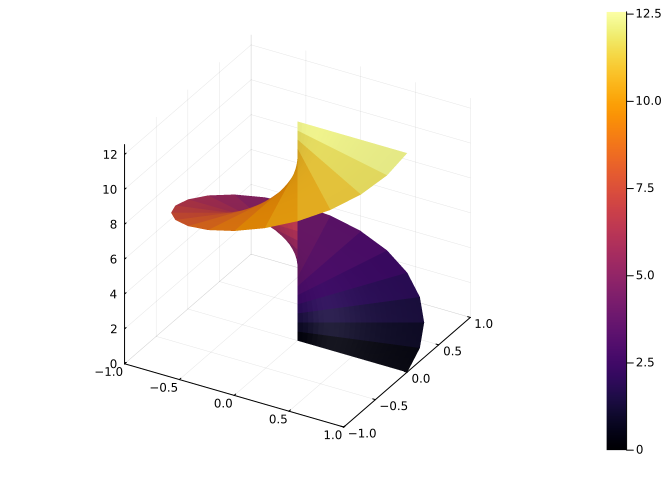
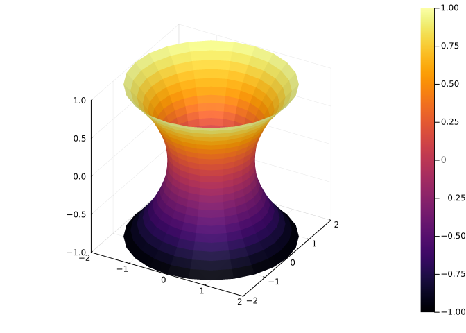

F(u,v) = [-v, u]
vectorfieldplot(F, xlim=(-5,5), ylim=(-5,5), nx=10, ny=10)
This section uses these add-on packages:
using CalculusWithJulia
using Plots
using SymPy
using ForwardDiff
using LinearAlgebraFor a scalar function \(f: R^n \rightarrow R\), the gradient of \(f\), \(\nabla{f}\), is a function from \(R^n \rightarrow R^n\). Specializing to \(n=2\), a function that for each point, \((x,y)\), assigns a vector \(\vec{v}\). This is an example of vector field. More generally, we could have a function \(f: R^n \rightarrow R^m\), of which we have discussed many already:
| Mapping | Name | Visualize with | Notation |
|---|---|---|---|
| \(f: R\rightarrow R\) | univariate | familiar graph of function | \(f\) |
| \(f: R\rightarrow R^m\) | vector-valued | space curve when n=2 or 3 | \(\vec{r}\), \(\vec{N}\) |
| \(f: R^n\rightarrow R\) | scalar | a surface when n=2 | \(f\) |
| \(F: R^n\rightarrow R^n\) | vector field | a vector field when n=2 | \(F\) |
| \(F: R^n\rightarrow R^m\) | multivariable | n=2,m=3 describes a surface | \(F\), \(\Phi\) |
After an example where the use of a multivariable function is of necessity, we discuss differentiation in general for a multivariable functions.
We have seen that the gradient of a scalar function, \(f:R^2 \rightarrow R\), takes a point in \(R^2\) and associates a vector in \(R^2\). As such \(\nabla{f}:R^2 \rightarrow R^2\) is a vector field. A vector field can be visualized by sampling a region and representing the field at those points. The details, as previously mentioned, are in the vectorfieldplot function of CalculusWithJulia.
F(u,v) = [-v, u]
vectorfieldplot(F, xlim=(-5,5), ylim=(-5,5), nx=10, ny=10)
The optional arguments nx=10 and ny=10 determine the number of points on the grid that a vector will be plotted. These vectors are scaled to not overlap.
Vector field plots are useful for visualizing velocity fields, where a velocity vector is associated to each point; or streamlines, curves whose tangents are follow the velocity vector of a flow. Vector fields are used in physics to model the electric field and the magnetic field. These are used to describe forces on objects within the field.
The three dimensional vector field is one way to illustrate a vector field, but there is an alternate using field lines. Like Euler’s method, imagine starting at some point, \(\vec{r}\) in \(R^3\). The field at that point is a vector indicating a direction of motion. Follow that vector for some infinitesimal amount, \(d\vec{r}\). From here repeat. The field curve would satisfy \(\vec{r}'(t) = F(\vec{r}(t))\). Field curves only show direction, to indicate magnitude at a point, the convention is to use denser lines when the field is stronger.

Vector fields are also useful for other purposes, such as transformations, examples of which are a rotation or the conversion from polar to rectangular coordinates.
For transformations, a useful visualization is to plot curves where one variables is fixed. Consider the transformation from polar coordinates to cartesian coordinates \(F(r, \theta) = r \langle\cos(\theta),\sin(\theta)\rangle\). The following plot will show in blue fixed values of \(r\) (circles) and in red fixed values of \(\theta\) (rays).
F(r,theta) = r*[cos(theta), sin(theta)]
F(v) = F(v...)
rs = range(0, 2, length=5)
thetas = range(0, pi/2, length=9)
plot(legend=false, aspect_ratio=:equal)
plot!(unzip(F.(rs, thetas'))..., color=:red)
plot!(unzip(F.(rs', thetas))..., color=:blue)
pt = [1, pi/4]
J = ForwardDiff.jacobian(F, pt)
arrow!(F(pt...), J[:,1], linewidth=5, color=:red)
arrow!(F(pt...), J[:,2], linewidth=5, color=:blue)To the plot, we added the partial derivatives with respect to \(r\) (in red) and with respect to \(\theta\) (in blue). These are found with the soon-to-be discussed Jacobian. From the graph, you can see that these vectors are tangent vectors to the drawn curves.
For a one-dimensional curve we have several descriptions. For example, as the graph of a function \(y=f(x)\); as a parametrically defined curve \(\vec{r}(t) = \langle x(t), y(t)\rangle\); or as a level curve of a scalar function \(f(x,y) = c\).
For two-dimensional surfaces in three dimensions, we have discussed describing these in terms of a function \(z = f(x,y)\) and as level curves of scalar functions: \(c = f(x,y,z)\). They can also be described parametrically.
We pick a familiar case, to make this concrete: the unit sphere in \(R^3\). We have
\[ \Phi(\theta, \phi) = \langle \sin(\phi)\cos(\theta), \sin(\phi)\sin(\theta), \cos(\phi) \rangle, \]
with \(\theta\) the azimuthal angle and \(\phi\) the polar angle (measured down from the \(z\) axis).
The function \(\Phi\) takes \(R^2\) into \(R^3\), so is a multivariable function.
When a surface is described by a function, \(z=f(x,y)\), then the gradient points (in the \(x-y\) plane) in the direction of greatest increase of \(f\). The vector \(\langle -f_x, -f_y, 1\rangle\) is a normal.
When a surface is described as a level curve, \(f(x,y,z) = c\), then the gradient is normal to the surface.
When a surface is described parametrically, there is no “gradient.” The partial derivatives are of interest, e.g., \(\partial{F}/\partial{\theta}\) and \(\partial{F}/\partial{\phi}\), vectors defined componentwise. These will be lie in the tangent plane of the surface, as they can be viewed as tangent vectors for parametrically defined curves on the surface. Their cross product will be normal to the surface. The magnitude of the cross product, which reflects the angle between the two partial derivatives, will be informative as to the surface area.
JuliaConsider the parametrically described surface above. How would it be plotted? Using the Plots package, the process is quite similar to how a surface described by a function is plotted, but the \(z\) values must be computed prior to plotting.
Here we define the parameterization using functions to represent each component:
X(theta,phi) = sin(phi) * cos(theta)
Y(theta,phi) = sin(phi) * sin(theta)
Z(theta,phi) = cos(phi)Z (generic function with 1 method)Then:
thetas = range(0, stop=pi/2, length=50)
phis = range(0, stop=pi, length=50)
xs = [X(theta, phi) for theta in thetas, phi in phis]
ys = [Y(theta, phi) for theta in thetas, phi in phis]
zs = [Z(theta, phi) for theta in thetas, phi in phis]
surface(xs, ys, zs) ## see note
Only some backends for Plots will produce this type of plot. Both plotly() and pyplot() will, but not gr().
PyPlot can be used directly to make these surface plots: `import PyPlot; PyPlot.plot_surface(xs,ys,zs).
Instead of the comprehension, broadcasting can be used
surface(X.(thetas, phis'), Y.(thetas, phis'), Z.(thetas, phis'))
If the parameterization is presented as a function, broadcasting can be used to succintly plot
Phi(theta, phi) = [X(theta, phi), Y(theta, phi), Z(theta, phi)]
surface(unzip(Phi.(thetas, phis'))...)The partial derivatives of each component, \(\partial{\Phi}/\partial{\theta}\) and \(\partial{\Phi}/\partial{\phi}\), can be computed directly:
\[\begin{align*} \partial{\Phi}/\partial{\theta} &= \langle -\sin(\phi)\sin(\theta), \sin(\phi)\cos(\theta),0 \rangle,\\ \partial{\Phi}/\partial{\phi} &= \langle \cos(\phi)\cos(\theta), \cos(\phi)\sin(\theta), -\sin(\phi) \rangle. \end{align*}\]
Using SymPy, we can compute through:
@syms theta phi
out = [diff.(Phi(theta, phi), theta) diff.(Phi(theta, phi), phi)]3×2 Matrix{Sym}:
-sin(φ)⋅sin(θ) cos(φ)⋅cos(θ)
sin(φ)⋅cos(θ) sin(θ)⋅cos(φ)
0 -sin(φ)At the point \((\theta, \phi) = (\pi/12, \pi/6)\) this evaluates to the following.
subs.(out, theta.=> PI/12, phi.=>PI/6) .|> N3×2 Matrix{Real}:
-0.12941 0.836516
0.482963 0.224144
0 -1//2We found numeric values, so that we can compare to the numerically identical values computed by the jacobian function from ForwardDiff:
pt = [pi/12, pi/6]
out₁ = ForwardDiff.jacobian(v -> Phi(v...), pt)3×2 Matrix{Float64}:
-0.12941 0.836516
0.482963 0.224144
-0.0 -0.5What this function computes exactly will be described next, but here we visualize the partial derivatives and see they lie in the tangent plane at the point:
us, vs = range(0, pi/2, length=25), range(0, pi, length=25)
xs, ys, zs = unzip(Phi.(us, vs'))
surface(xs, ys, zs, legend=false)
arrow!(Phi(pt...), out₁[:,1], linewidth=3)
arrow!(Phi(pt...), out₁[:,2], linewidth=3)
Informally, the total derivative at \(a\) is the best linear approximation of the value of a function, \(F\), near \(a\) with respect to its arguments. If it exists, denote it \(dF_a\).
For a function \(F: R^n \rightarrow R^m\) we have the total derivative at \(\vec{a}\) (a point or vector in \(R^n\)) is a matrix \(J\) (a linear transformation) taking vectors in \(R^n\) and returning, under multiplication, vectors in \(R^m\) (this matrix will be \(m \times n\)), such that for some neighborhood of \(\vec{a}\), we have:
\[ \lim_{\vec{x} \rightarrow \vec{a}} \frac{\|F(\vec{x}) - F(\vec{a}) - J\cdot(\vec{x}-\vec{a})\|}{\|\vec{x} - \vec{a}\|} = \vec{0}. \]
(That is \(\|F(\vec{x}) - F(\vec{a}) - J\cdot(\vec{x}-\vec{a})\|=\mathcal{o}(\|\vec{x}-\vec{a}\|)\).)
If for some \(J\) the above holds, the function \(F\) is said to be totally differentiable, and the matrix \(J =J_F=dF_a\) is the total derivative.
For a multivariable function \(F:R^n \rightarrow R^m\), we may express the function in vector-valued form \(F(\vec{x}) = \langle f_1(\vec{x}), f_2(\vec{x}),\dots,f_m(\vec{x})\rangle\), each component a scalar function. Then, if the total derivative exists, it can be expressed by the Jacobian:
\[ J = \begin{bmatrix} \frac{\partial f_1}{\partial x_1} &\quad \frac{\partial f_1}{\partial x_2} &\dots&\quad\frac{\partial f_1}{\partial x_n}\\ \frac{\partial f_2}{\partial x_1} &\quad \frac{\partial f_2}{\partial x_2} &\dots&\quad\frac{\partial f_2}{\partial x_n}\\ &&\vdots&\\ \frac{\partial f_m}{\partial x_1} &\quad \frac{\partial f_m}{\partial x_2} &\dots&\quad\frac{\partial f_m}{\partial x_n} \end{bmatrix}. \]
This may also be viewed as:
\[ J = \begin{bmatrix} &\nabla{f_1}'\\ &\nabla{f_2}'\\ &\quad\vdots\\ &\nabla{f_m}' \end{bmatrix} = \left[ \frac{\partial{F}}{\partial{x_1}}\quad \frac{\partial{F}}{\partial{x_2}} \cdots \frac{\partial{F}}{\partial{x_n}} \right]. \]
The latter representing a matrix of \(m\) row vectors, each with \(n\) components or as a matrix of \(n\) column vectors, each with \(m\) components.
After specializing the total derivative to the cases already discussed, we have:
definition of differentiability for \(f\) involved existence of the partial derivatives and moreover, the fact that a limit like the above held with \(\nabla{f}(C) \cdot \vec{h}\) in place of \(J\cdot(\vec{x}-\vec{a})\). Here \(\vec{h}\) and \(\vec{x}-\vec{a}\) are vectors in \(R^n\). Were the dot product in \(\nabla{f}(C) \cdot \vec{h}\) expressed in matrix multiplication we would have for this case a \(1 \times n\) matrix of the correct form:
\[ J = [\nabla{f}']. \]
\[ \text{Hessian} = \begin{bmatrix} \frac{\partial^2 f}{\partial x^2} &\quad \frac{\partial^2 f}{\partial x \partial y}\\ \frac{\partial^2 f}{\partial y \partial x} &\quad \frac{\partial^2 f}{\partial y \partial y} \end{bmatrix} \]
This is equivalent to:
\[ \begin{bmatrix} \frac{\partial \frac{\partial f}{\partial x}}{\partial x} &\quad \frac{\partial \frac{\partial f}{\partial x}}{\partial y}\\ \frac{\partial \frac{\partial f}{\partial y}}{\partial x} &\quad \frac{\partial \frac{\partial f}{\partial y}}{\partial y}\\ \end{bmatrix} . \]
As such, the total derivative is a generalization of what we have previously discussed.
If \(G:R^k \rightarrow R^n\) and \(F:R^n \rightarrow R^m\), then the composition \(F\circ G\) takes \(R^k \rightarrow R^m.\) If all three functions are totally differentiable, then a chain rule will hold (total derivative of \(F\circ G\) at point \(a\)):
\[ d(F\circ G)_a = dF_{G(a)} \cdot dG_a \]
If correct, this has the same formulation as the chain rule for the univariate case: derivative of outer at the inner times the derivative of the inner.
First we check that the dimensions are correct: We have \(dF_{G(a)}\) (the total derivative of \(F\) at the point \(G(a)\)) is an \(m \times n\) matrix and \(dG_a\) (the total derivative of \(G\) at the point \(a\)) is a \(n \times k\) matrix. The product of a \(m \times n\) matrix with a \(n \times k\) matrix is defined, and is a \(m \times k\) matrix, as is \(d(F \circ G)_a\).
The proof that the formula is correct uses the definition of totally differentiable written as
\[ F(b + \vec{h}) - F(b) - dF_b\cdot \vec{h} = \epsilon(\vec{h}) \vec{h}, \]
where \(\epsilon(h) \rightarrow \vec{0}\) as \(h \rightarrow \vec{0}\).
We have, using this for both \(F\) and \(G\):
\[\begin{align*} F(G(a + \vec{h})) - F(G(a)) &= F(G(a) + (dG_a \cdot \vec{h} + \epsilon_G \vec{h})) - F(G(a))\\ &= F(G(a)) + dF_{G(a)} \cdot (dG_a \cdot \vec{h} + \epsilon_G \vec{h}) \\ &+ \quad\epsilon_F (dG_a \cdot \vec{h} + \epsilon_G \vec{h}) - F(G(a))\\ &= dF_{G(a)} \cdot (dG_a \cdot \vec{h}) + dF_{G(a)} \cdot (\epsilon_G \vec{h}) + \epsilon_F (dG_a \cdot \vec{h}) + (\epsilon_F \cdot \epsilon_G\vec{h}) \end{align*}\]
The last line uses the linearity of \(dF\) to isolate \(dF_{G(a)} \cdot (dG_a \cdot \vec{h})\). Factoring out \(\vec{h}\) and taking norms gives:
\[\begin{align*} \frac{\| F(G(a+\vec{h})) - F(G(a)) - dF_{G(a)}dG_a \cdot \vec{h} \|}{\| \vec{h} \|} &= \frac{\| dF_{G(a)}\cdot(\epsilon_G\vec{h}) + \epsilon_F (dG_a\cdot \vec{h}) + (\epsilon_F\cdot\epsilon_G\vec{h}) \|}{\| \vec{h} \|} \\ &\leq \| dF_{G(a)}\cdot\epsilon_G + \epsilon_F (dG_a) + \epsilon_F\cdot\epsilon_G \|\frac{\|\vec{h}\|}{\| \vec{h} \|}\\ &\rightarrow 0. \end{align*}\]
Our main use of the total derivative will be the change of variables in integration.
A point \((a,b)\) in the plane can be described in polar coordinates by a radius \(r\) and polar angle \(\theta\). We can express this formally by \(F:(a,b) \rightarrow (r, \theta)\) with
\[ r(a,b) = \sqrt{a^2 + b^2}, \quad \theta(a,b) = \tan^{-1}(b/a), \]
the latter assuming the point is in quadrant I or IV (though atan(y,x) will properly handle the other quadrants). The Jacobian of this transformation may be found with
@syms a::real b::real
rⱼ = sqrt(a^2 + b^2)
θⱼ = atan(b/a)
Jac = Sym[diff.(rⱼ, [a,b])'; # [∇f_1'; ∇f_2']
diff.(θⱼ, [a,b])']
simplify.(Jac)2×2 Matrix{Sym}:
a*conjugate(1/sqrt(a^2 + b^2)) b*conjugate(1/sqrt(a^2 + b^2))
-b/(a^2 + b^2) a/(a^2 + b^2)SymPy array objects have a jacobian method to make this easier to do. The calling style is Python-like, using object.method(...):
[rⱼ, θⱼ].jacobian([a, b])2×2 Matrix{Sym}:
a/sqrt(a^2 + b^2) b/sqrt(a^2 + b^2)
-b/(a^2*(1 + b^2/a^2)) 1/(a*(1 + b^2/a^2))The determinant, of geometric interest, will be
det(Jac) |> simplifyThe determinant is of interest, as the linear mapping represented by the Jacobian changes the area of the associated coordinate vectors. The determinant describes ow this area changes, as a multiplying factor.
In \(3\) dimensions a point can be described by (among other ways):
\[ \phi \]
measured down from the \(z\) axes. (We use the mathematics naming convention, the physics one has \(\phi\) and \(\theta\) reversed.)
Some mappings are:
| Cartesian (x,y,z) | Spherical (\(r\), \(\theta\), \(\phi\)) | Cylindrical (\(r\), \(\theta\), \(z\)) |
|---|---|---|
| (1, 1, 0) | \((\sqrt{2}, \pi/4, \pi/2)\) | \((\sqrt{2},\pi/4, 0)\) |
| (0, 1, 1) | \((\sqrt{2}, 0, \pi/4)\) | \((\sqrt{2}, 0, 1)\) |
Formulas can be found to convert between the different systems, here are a few written as multivariable functions:
function spherical_from_cartesian(x,y,z)
r = sqrt(x^2 + y^2 + z^2)
theta = atan(y/x)
phi = acos(z/r)
[r, theta, phi]
end
function cartesian_from_spherical(r, theta, phi)
x = r*sin(phi)*cos(theta)
y = r*sin(phi)*sin(theta)
z = r*cos(phi)
[x, y, z]
end
function cylindrical_from_cartesian(x, y, z)
r = sqrt(x^2 + y^2)
theta = atan(y/x)
z = z
[r, theta, z]
end
function cartesian_from_cylindrical(r, theta, z)
x = r*cos(theta)
y = r*sin(theta)
z = z
[x, y, z]
end
spherical_from_cartesian(v) = spherical_from_cartesian(v...)
cartesian_from_spherical(v) = cartesian_from_spherical(v...)
cylindrical_from_cartesian(v)= cylindrical_from_cartesian(v...)
cartesian_from_cylindrical(v) = cartesian_from_cylindrical(v...)cartesian_from_cylindrical (generic function with 2 methods)The Jacobian of a transformation can be found from these conversions. For example, the conversion from spherical to cartesian would have Jacobian computed by:
@syms r::real
ex1 = cartesian_from_spherical(r, theta, phi)
J1 = ex1.jacobian([r, theta, phi])3×3 Matrix{Sym}:
sin(φ)⋅cos(θ) -r⋅sin(φ)⋅sin(θ) r⋅cos(φ)⋅cos(θ)
sin(φ)⋅sin(θ) r⋅sin(φ)⋅cos(θ) r⋅sin(θ)⋅cos(φ)
cos(φ) 0 -r⋅sin(φ)This has determinant:
det(J1) |> simplifyThere is no function to convert from spherical to cylindrical above, but clearly one can be made by composition:
cylindrical_from_spherical(r, theta, phi) =
cylindrical_from_cartesian(cartesian_from_spherical(r, theta, phi)...)
cylindrical_from_spherical(v) = cylindrical_from_spherical(v...)cylindrical_from_spherical (generic function with 2 methods)From this composition, we could compute the Jacobian directly, as with:
ex2 = cylindrical_from_spherical(r, theta, phi)
J2 = ex2.jacobian([r, theta, phi])3×3 Matrix{Sym}:
(r*sin(phi)^2*sin(theta)^2 + r*sin(phi)^2*cos(theta)^2)/sqrt(r^2*sin(phi)^2*sin(theta)^2 + r^2*sin(phi)^2*cos(theta)^2) … (r^2*sin(phi)*sin(theta)^2*cos(phi) + r^2*sin(phi)*cos(phi)*cos(theta)^2)/sqrt(r^2*sin(phi)^2*sin(theta)^2 + r^2*sin(phi)^2*cos(theta)^2)
0 0
cos(φ) -r⋅sin(φ)Now to see that this last expression could have been found by the chain rule. To do this we need to find the Jacobian of each function; evaluate them at the proper places; and, finally, multiply the matrices. The J1 object, found above, does one Jacobian. We now need to find that of cylindrical_from_cartesian:
@syms x::real y::real z::real
ex3 = cylindrical_from_cartesian(x, y, z)
J3 = ex3.jacobian([x,y,z])3×3 Matrix{Sym}:
x/sqrt(x^2 + y^2) y/sqrt(x^2 + y^2) 0
-y/(x^2*(1 + y^2/x^2)) 1/(x*(1 + y^2/x^2)) 0
0 0 1The chain rule is not simply J3 * J1 in the notation above, as the J3 matrix must be evaluated at “G(a)”, which is ex1 from above:
J3_Ga = subs.(J3, x => ex1[1], y => ex1[2], z => ex1[3]) .|> simplify # the dots are important3×3 Matrix{Sym}:
r*sin(phi)*cos(theta)/(sqrt(sin(phi)^2)*Abs(r)) … 0
-sin(theta)/(r*sin(phi)) 0
0 1The chain rule now says this product should be equivalent to J2 above:
J3_Ga * J13×3 Matrix{Sym}:
r*sin(phi)^2*sin(theta)^2/(sqrt(sin(phi)^2)*Abs(r)) + r*sin(phi)^2*cos(theta)^2/(sqrt(sin(phi)^2)*Abs(r)) … r^2*sin(phi)*sin(theta)^2*cos(phi)/(sqrt(sin(phi)^2)*Abs(r)) + r^2*sin(phi)*cos(phi)*cos(theta)^2/(sqrt(sin(phi)^2)*Abs(r))
0 0
cos(φ) -r⋅sin(φ)The two are equivalent after simplification, as seen here:
J3_Ga * J1 - J2 .|> simplify3×3 Matrix{Sym}:
0 0 0
0 0 0
0 0 0The above examples were done symbolically. Performing the calculation numerically is quite similar. The ForwardDiff package has a gradient function to find the gradient at a point. The CalculusWithJulia package extends this to take a gradient of a function and return a function, also called gradient. This is defined along the lines of:
gradient(f::Function) = x -> ForwardDiff.gradient(f, x)(though more flexibly, as either vector or a separate arguments can be used.)
With this, defining a Jacobian function could be done like:
function Jacobian(F, x)
n = length(F(x...))
grads = [gradient(x -> F(x...)[i])(x) for i in 1:n]
vcat(grads'...)
endBut, like SymPy, ForwardDiff provides a jacobian function directly, so we will use that; it requires a function definition where a vector is passed in and is called by ForwardDiff.jacobian. (The ForwardDiff package does not export its methods, they are qualified using the module name.)
Using the above functions, we can verify the last example at a point:
rtp = [1, pi/3, pi/4]
ForwardDiff.jacobian(cylindrical_from_spherical, rtp)3×3 Matrix{Float64}:
0.707107 0.0 0.707107
0.0 1.0 0.0
0.707107 0.0 -0.707107The chain rule gives the same answer up to roundoff error:
ForwardDiff.jacobian(cylindrical_from_cartesian, cartesian_from_spherical(rtp)) * ForwardDiff.jacobian(cartesian_from_spherical, rtp)3×3 Matrix{Float64}:
0.707107 0.0 0.707107
5.55112e-17 1.0 5.55112e-17
0.707107 0.0 -0.707107For a change of variable problem, \(F:R^n \rightarrow R^n\), the determinant of the Jacobian quantifies how volumes get modified under the transformation. When this determinant is nonzero, then more can be said. The Inverse Function Theorem states
if \(F\) is a continuously differentiable function from an open set of \(R^n\) into \(R^n\)and the total derivative is invertible at a point \(p\) (i.e., the Jacobian determinant of \(F\) at \(p\) is non-zero), then \(F\) is invertible near \(p\). That is, an inverse function to \(F\) is defined on some neighborhood of \(q\), where \(q=F(p)\). Further, \(F^{-1}\) will be continuously differentiable at \(q\) with \(J_{F^{-1}}(q) = [J_F(p)]^{-1}\), the latter being the matrix inverse. Taking determinants, \(\det(J_{F^{-1}}(q)) = 1/\det(J_F(p))\).
Assuming \(F^{-1}\) exists, we can verify the last part from the chain rule, in an identical manner to the univariate case, starting with \(F^{-1} \circ F\) being the identity, we would have:
\[ J_{F^{-1}\circ F}(p) = I, \]
where \(I\) is the identity matrix with entry \(a_{ij} = 1\) when \(i=j\) and \(0\) otherwise.
But the chain rule then says \(J_{F^{-1}}(F(p)) J_F(p) = I\). This implies the two matrices are inverses to each other, and using the multiplicative mapping property of the determinant will also imply the determinant relationship.
The theorem is an existential theorem, in that it implies \(F^{-1}\) exists, but doesn’t indicate how to find it. When we have an inverse though, we can verify the properties implied.
The transformation examples have inverses indicated. Using one of these we can verify things at a point, as done in the following:
p = [1, pi/3, pi/4]
q = cartesian_from_spherical(p)
A1 = ForwardDiff.jacobian(spherical_from_cartesian, q) # J_F⁻¹(q)
A2 = ForwardDiff.jacobian(cartesian_from_spherical, p) # J_F(p)
A1 * A23×3 Matrix{Float64}:
1.0 0.0 0.0
5.55112e-17 1.0 5.55112e-17
0.0 0.0 1.0Up to roundoff error, this is the identity matrix. As for the relationship between the determinants, up to roundoff error the two are related, as expected:
det(A1), 1/det(A2)(-1.4142135623730956, -1.4142135623730951)The technique of implicit differentiation is a useful one, as it allows derivatives of more complicated expressions to be found. The main idea, expressed here with three variables is if an equation may be viewed as \(F(x,y,z) = c\), \(c\) a constant, then \(z=\phi(x,y)\) may be viewed as a function of \(x\) and \(y\). Hence, we can use the chain rule to find: \(\partial z / \partial x\) and \(\partial z /\partial x\). Let \(G(x,y) = \langle x, y, \phi(x,y) \rangle\) and then differentiation \((F \circ G)(x,y) = c\):
\[\begin{align*} 0 &= dF_{G(x,y)} \circ dG_{\langle x, y\rangle}\\ &= [\frac{\partial F}{\partial x}\quad \frac{\partial F}{\partial y}\quad \frac{\partial F}{\partial z}](G(x,y)) \cdot \begin{bmatrix} 1 & 0\\ 0 & 1\\ \frac{\partial \phi}{\partial x} & \frac{\partial \phi}{\partial y} \end{bmatrix}. \end{align*}\]
Solving yields
\[ \frac{\partial \phi}{\partial x} = -\frac{\partial F/\partial x}{\partial F/\partial z},\quad \frac{\partial \phi}{\partial y} = -\frac{\partial F/\partial y}{\partial F/\partial z}. \]
Where the right hand side of each is evaluated at \(G(x,y)\).
When can it be reasonably assumed that such a function \(z= \phi(x,y)\) exists?
The Implicit Function Theorem provides a statement (slightly abridged here):
Let \(F:R^{n+m} \rightarrow R^m\) be a continuously differentiable function and let \(R^{n+m}\) have (compactly defined) coordinates \(\langle \vec{x}, \vec{y} \rangle\), Fix a point \(\langle \vec{a}, \vec{b} \rangle\) with \(F(\vec{a}, \vec{b}) = \vec{0}\). Let \(J_{F, \vec{y}}(\vec{a}, \vec{b})\) be the Jacobian restricted to just the \(y\) variables. (\(J\) is \(m \times m\).) If this matrix has non-zero determinant (it is invertible), then there exists an open set \(U\) containing \(\vec{a}\) and a unique continuously differentiable function \(G: U \subset R^n \rightarrow R^m\) such that \(G(\vec{a}) = \vec{b}\), \(F(\vec{x}, G(\vec{x})) = 0\) for \(\vec x\) in \(U\). Moreover, the partial derivatives of \(G\) are given by the matrix product:
\(\frac{\partial G}{\partial x_j}(\vec{x}) = - [J_{F, \vec{y}}(x, F(\vec{x}))]^{-1} \left[\frac{\partial F}{\partial x_j}(x, G(\vec{x}))\right].\)
Specializing to our case above, we have \(f:R^{2+1}\rightarrow R^1\) and \(\vec{x} = \langle a, b\rangle\) and \(\phi:R^2 \rightarrow R\). Then
\[ [J_{f, \vec{y}}(x, g(\vec{x}))] = [\frac{\partial f}{\partial z}(a, b, \phi(a,b)], \]
a \(1\times 1\) matrix, identified as a scalar, so inversion is just the reciprocal. So the formula, becomes, say for \(x_1 = x\):
\[ \frac{\partial \phi}{\partial x}(a, b) = - \frac{\frac{\partial{f}}{\partial{x}}(a, b,\phi(a,b))}{\frac{\partial{f}}{\partial{z}}(a, b, \phi(a,b))}, \]
as expressed above. Here invertibility is simply a non-zero value, and is needed for the division. In general, we see inverse (the \(J^{-1}\)) is necessary to express the answer.
Using this, we can answer questions like the following (as we did before) on a more solid ground:
Let \(x^2/a^2 + y^2/b^2 + z^2/c^2 = 1\) be an equation describing an ellipsoid. Describe the tangent plane at a point on the ellipse.
We would like to express the tangent plane in terms of \(\partial{z}/\partial{x}\) and \(\partial{z}/\partial{y}\), which we can do through:
\[ \frac{2x}{a^2} + \frac{2z}{c^2} \frac{\partial{z}}{\partial{x}} = 0, \quad \frac{2y}{a^2} + \frac{2z}{c^2} \frac{\partial{z}}{\partial{y}} = 0. \]
Solving, we get
\[ \frac{\partial{z}}{\partial{x}} = -\frac{2x}{a^2}\frac{c^2}{2z}, \quad \frac{\partial{z}}{\partial{y}} = -\frac{2y}{a^2}\frac{c^2}{2z}, \]
provided \(z \neq 0\). At \(z=0\) the tangent plane exists, but we can’t describe it in this manner, as it is vertical. However, the choice of variables to use is not fixed in the theorem, so if \(x \neq 0\) we can express \(x = x(y,z)\) and express the tangent plane in terms of \(\partial{x}/\partial{y}\) and \(\partial{x}/\partial{z}\). The answer is similar to the above, and we won’t repeat. Similarly, should \(x = z = 0\), the \(y \neq 0\) and we can use an implicit definition \(y = y(x,z)\) and express the tangent plane through \(\partial{y}/\partial{x}\) and \(\partial{y}/\partial{z}\).
Consider now the problem of maximizing \(f:R^n \rightarrow R\) subject to \(k < n\) constraints \(g_1(\vec{x}) = c_1, g_2(\vec{x}) = c_2, \dots, g_{k}(\vec{x}) = c_{k}\). For \(n=1\) and \(2\), we saw that if all derivatives exist, then a necessary condition to be at a maximum is that \(\nabla{f}\) can be written as \(\lambda_1 \nabla{g_1}\) (\(n=1\)) or \(\lambda_1 \nabla{g_1} + \lambda_2 \nabla{g_2}\). The key observation is that the gradient of \(f\) must have no projection on the intersection of the tangent planes found by linearizing \(g_i\).
The same thing holds in dimension \(n > 2\): Let \(\vec{x}_0\) be a point where \(f(\vec{x})\) is maximum subject to the \(p\) constraints. We want to show that \(\vec{x}_0\) must satisfy:
\[ \nabla{f}(\vec{x}_0) = \sum \lambda_i \nabla{g_i}(\vec{x}_0). \]
By considering \(-f\), the same holds for a minimum.
We follow the sketch of Sawyer.
Using Taylor’s theorem, we have \(f(\vec{x} + h \vec{y}) = f(\vec{x}) + h \vec{y}\cdot\nabla{f} + h^2\vec{c}\), for some \(\vec{c}\). If \(h\) is small enough, this term can be ignored.
The tangent “plane” for each constraint, \(g_i(\vec{x}) = c_i\), is orthogonal to the gradient vector \(\nabla{g_i}(\vec{x})\). That is, \(\nabla{g_i}(\vec{x})\) is orthogonal to the level-surface formed by the constraint \(g_i(\vec{x}) = 0\). Let \(A\) be the set of all linear combinations of \(\nabla{g_i}\), that are possible: \(\lambda_1 g_1(\vec{x}) + \lambda_2 g_2(\vec{x}) + \cdots + \lambda_p g_p(\vec{x})\), as in the statement. Through projection, we can write \(\nabla{f}(\vec{x}_0) = \vec{a} + \vec{b}\), where \(\vec{a}\) is in \(A\) and \(\vec{b}\) is orthogonal to \(A\).
Let \(\vec{r}(t)\) be a parameterization of a path through the intersection of the \(p\) tangent planes that goes through \(\vec{x}_0\) at \(t_0\) and \(\vec{b}\) is parallel to \(\vec{x}_0'(t_0)\). (The implicit function theorem would guarantee this path.)
If we consider \(f(\vec{x}_0 + h \vec{b})\) for small \(h\), then unless \(\vec{b} \cdot \nabla{f} = 0\), the function would increase in the direction of \(\vec{b}\) due to the \(h \vec{b}\cdot\nabla{f}\) term in the approximating Taylor series. That is, \(\vec{x}_0\) would not be a maximum on the constraint. So at \(\vec{x}_0\) this directional derivative is \(0\).
Then we have the directional derivative in the direction of \(b\) is \(\vec{0}\), as the gradient
\[ \vec{0} = \vec{b} \cdot \nabla{f}(\vec{x}_0) = \vec{b} \cdot (\vec{a} + \vec{b}) = \vec{b}\cdot \vec{a} + \vec{b}\cdot\vec{b} = \vec{b}\cdot\vec{b}, \]
or \(\| \vec{b} \| = 0\) and \(\nabla{f}(\vec{x}_0)\) must lie in the plane \(A\).
How does the implicit function theorem guarantee a parameterization of a curve along the constraint in the direction of \(b\)?
A formal proof requires a bit of linear algebra, but here we go. Let \(G(\vec{x}) = \langle g_1(\vec{x}), g_2(\vec{x}), \dots, g_k(\vec{x}) \rangle\). Then \(G(\vec{x}) = \vec{c}\) encodes the constraint. The tangent planes are orthogonal to each \(\nabla{g_i}\), so using matrix notation, the intersection of the tangent planes is any vector \(\vec{h}\) satisfying \(J_G(\vec{x}_0) \vec{h} = 0\). Let \(k = n - 1 - p\). If \(k > 0\), there will be \(k\) vectors orthogonal to each of \(\nabla{g_i}\) and \(\vec{b}\). Call these \(\vec{v}_j\). Then define additional constraints \(h_j(\vec{x}) = \vec{v}_j \cdot \vec{x} = 0\). Let \(H(x_1, x_2, \dots, x_n) = \langle g_1, g_2, \dots, g_p, h_1, \dots, h_{n-1-p}\rangle\). \(H:R^{1 + (n-1)} \rightarrow R^{n-1}\). Let \(H(x_1, \dots, x_n) = H(x, \vec{y})\) The \(H\) restricted to the \(\vec{y}\) variables is a function from \(R^{n-1}\rightarrow R^{n-1}\). If this restricted function has a Jacobian with non-zero determinant, then there exists a \(\vec\phi(x): R \rightarrow R^{n-1}\) with \(H(x, \vec\phi(x)) = \vec{c}\). Let \(\vec{r}(t) = \langle t, \phi_1(t), \dots, \phi_{n-1}(t)\rangle\). Then \((H\circ\vec{r})(t) = \vec{c}\), so by the chain rule \(d_H(\vec{r}) d\vec{r} = 0\). But \(dH = [\nabla{g_1}'; \nabla{g_2}' \dots;\nabla{g_p}', v_1';\dots;v_{n-1-p}']\) (A matrix of row vectors). The condition \(dH(\vec{r}) d\vec{r} = \vec{0}\) is equivalent to saying \(d\vec{r}\) is orthogonal to the row vectors in \(dH\). A basis for \(R^n\) are these vectors and \(\vec{b}\), so \(\vec{r}\) and \(\vec{b}\) must be parallel.
We apply this to two problems, also from Sawyer. First, let \(n > 1\) and \(f(x_1, \dots, x_n) = \sum x_i^2\). Minimize this subject to the constraint \(\sum x_i = 1\). This one constraint means an answer must satisfy \(\nabla{L} = \vec{0}\) where
\[ L(x_1, \dots, x_n, \lambda) = \sum x_i^2 + \lambda \sum x_i - 1. \]
Taking \(\partial/\partial{x_i}\) we have \(2x_i + \lambda = 0\), so \(x_i = \lambda/2\), a constant. From the constraint, we see \(x_i = 1/n\). This does not correspond to a maximum, but a minimum. A maximum would be at point on the constraint such as \(\langle 1, 0, \dots, 0\rangle\), which gives a value of \(1\) for \(f\), not \(n \times 1/n^2 = 1/n\).
In statistics, there are different ways to define the best estimate for a population parameter based on the data. That is, suppose \(X_1, X_2, \dots, X_n\) are random variables. The population parameters of interest here are the mean \(E(X_i) = \mu\) and the variance \(Var(X_i) = \sigma_i^2\). (The mean is assumed to be the same for all, but the variance need not be.) What should someone use to estimate \(\mu\) using just the sample values \(X_1, X_2, \dots, X_n\)? The average, \((X_1 + \cdots + X_n)/n\) is a well known estimate, but is it the “best” in some sense for this set up? Here some variables are more variable, should they count the same, more, or less in the weighting for the estimate?
In Sawyer, we see an example of applying the Lagrange multiplier method to the best linear unbiased estimator (BLUE). The BLUE is a choice of coefficients \(a_i\) such that \(Var(\sum a_i X_i)\) is smallest subject to the constraint \(E(\sum a_i X_i) = \mu\).
The BLUE minimizes the variance of the estimator. (This is the Best part of BLUE). The estimator, \(\sum a_i X_i\), is Linear. The constraint is that the estimator has theoretical mean given by \(\mu\). (This is the Unbiased part of BLUE.)
Going from statistics to mathematics, we use formulas for independent random variables to restate this problem mathematically as:
\[ \text{Minimize } \sum a_i^2 \sigma_i^2 \text{ subject to } \sum a_i = 1. \]
This problem is similar now to the last one, save the sum to minimize includes the sigmas. Set \(L = \sum a_i^2 \sigma_i^2 + \lambda\sum a_i - 1\)
Taking \(\partial/\partial{a_i}\) gives equations \(2a_i\sigma_i^2 + \lambda = 0\), \(a_i = -\lambda/(2\sigma_i^2) = c/\sigma_i^2\). The constraint implies \(c = 1/\sum(1/\sigma_i)^2\). So variables with more variance, get smaller weights.
For the special case of a common variance, \(\sigma_i=\sigma\), the above simplifies to \(a_i = 1/n\) and the estimator is \(\sum X_i/n\), the familiar sample mean, \(\bar{X}\).
The following plots a surface defined by a (hidden) function \(F: R^2 \rightarrow R^3\):
𝑭 (generic function with 1 method)us, vs = range(0, 1, length=25), range(0, 2pi, length=25)
xs, ys, zs = unzip(𝑭.(us, vs'))
surface(xs, ys, zs)
Is this the surface generated by \(F(u,v) = \langle u\cos(v), u\sin(v), 2v\rangle\)? This function’s surface is termed a helicoid.
The following plots a surface defined by a (hidden) function \(F: R^2 \rightarrow R^3\) of the form \(F(u,v) = \langle r(u)\cos(v), r(u)\sin(v), u\rangle\)
ℱ (generic function with 1 method)us, vs = range(-1, 1, length=25), range(0, 2pi, length=25)
xs, ys, zs = unzip(ℱ.(us, vs'))
surface(xs, ys, zs)
Is this the surface generated by \(r(u) = 1+u^2\)? This form of a function is for a surface of revolution about the \(z\) axis.
The transformation \(F(x, y) = \langle 2x + 3y + 1, 4x + y + 2\rangle\) is an example of an affine transformation. Is this the Jacobian of \(F\)
\[ J = \begin{bmatrix} 2 & 4\\ 3 & 1 \end{bmatrix}. \]
Does the transformation \(F(u,v) = \langle u^2 - v^2, u^2 + v^2 \rangle\) have Jacobian
\[ J = \begin{bmatrix} 2u & -2v\\ 2u & 2v \end{bmatrix}? \]
Fix constants \(\lambda_0\) and \(\phi_0\) and define a transformation
\[ F(\lambda, \phi) = \langle \cos(\phi)\sin(\lambda - \lambda_0), \cos(\phi_0)\sin(\phi) - \sin(\phi_0)\cos(\phi)\cos(\lambda - \lambda_0) \rangle \]
What does the following SymPy code compute?
@syms lambda lambda_0 phi phi_0
F(lambda,phi) = [cos(phi)*sin(lambda-lambda_0), cos(phi_0)*sin(phi) - sin(phi_0)*cos(phi)*cos(lambda-lambda_0)]
out = [diff.(F(lambda, phi), lambda) diff.(F(lambda, phi), phi)]
det(out) |> simplifyWhat would be a more direct method:
Let \(z\sin(z) = x^3y^2 + z\). Compute \(\partial{z}/\partial{x}\) implicitly.
Let \(x^4 + y^4 + z^4 + x^2y^2z^2 = 1\). Compute \(\partial{z}/\partial{y}\) implicitly.
Consider the vector field \(R:R^2 \rightarrow R^2\) defined by \(R(x,y) = \langle x, y\rangle\) and the vector field \(S:R^2\rightarrow R^2\) defined by \(S(x,y) = \langle -y, x\rangle\). Let \(r = \|R\| = \sqrt{x^2 + y^2}\). \(R\) is a radial field, \(S\) a spin field.
What is \(\nabla{r}\)?
Let \(\phi = r^k\). What is \(\nabla{\phi}\)?
Based on your last answer, are all radial fields \(R/r^n\), \(n\geq 0\) gradients of scalar functions?
Let \(\phi = \tan^{-1}(y/x)\). What is \(\nabla{\phi}\)?
Express \(S/r^n = \langle F_x, F_y\rangle\). For which \(n\) is \(\partial{F_y}/\partial{x} - \partial{F_x}/\partial{y} = 0\)?
(The latter is of interest, as only when the expression is \(0\) will the vector field be the gradient of a scalar function.)